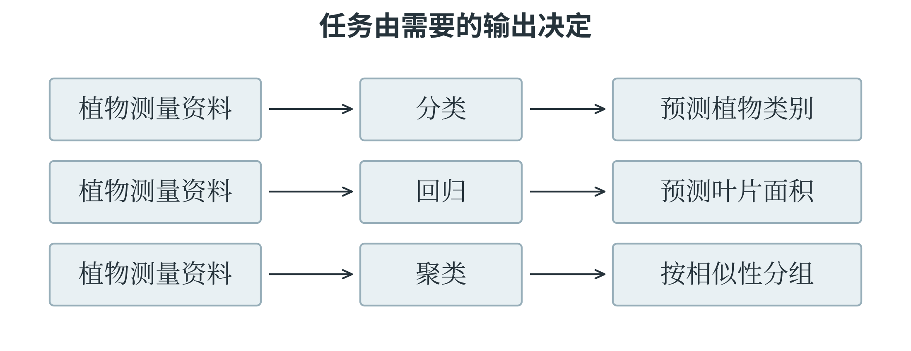

5.1 任务与学习方式
先看希望得到什么结果
在机器学习中，一条用于处理或分析的记录称为一个样本。它可以是一行测量值，也可以是一张图片、一段录音。用来描述样本、供模型计算的信息称为特征；在有标准答案的学习任务中，希望模型预测的目标称为标签或目标值。同一份植物记录中，叶片长度和宽度可以作为特征，植物类别可以作为标签。若任务改为根据类别和宽度预测长度，输入与目标的角色也随之改变。
分类要判断样本属于哪个类别。例如，根据叶片特征判断属于甲类还是乙类，根据邮件内容判断是否为垃圾邮件。只有两个类别时称为二分类，有多个互斥类别时称为多分类。类别可以编码成数字，但数字的用途是标记类别：用 0 表示甲类、1 表示乙类，并不意味着乙类在数量上比甲类“大一”。回归要预测具有数量意义的数值，例如叶片长度、明天的用水量或一段行程的耗时。预测值与真实值相差多少，通常具有明确意义。
区分分类与回归，要看数字代表什么，而不只看它是不是整数。预测班级编号属于分类；估计明天有多少人来借书，虽然人数是整数，仍可以作为数值预测问题处理。实际输出还可能需要取整或满足非负约束。
聚类则是在没有给定目标类别的情况下，根据样本之间的相似性分组。例如，只提供许多叶片的长度和宽度，希望算法寻找大小相近的组别。算法得到的“第 0 组”“第 1 组”只是簇的编号，不会自动成为准确的植物学类别。一个物种可能因生长阶段不同分成几组，不同物种也可能因形态相近聚到一起。
分类的类别已经给定，聚类的分组则有待发现。
同一批资料可以定义三种任务
假设一份植物资料同时记录了叶片长度、宽度、面积和已经确认的植物类别。若输入长度和宽度，要求输出植物类别，这是分类；若输入长度和宽度，要求输出面积，这是回归；若暂时不使用类别和面积，只根据长度和宽度把样本分成若干组，则是聚类。三个任务都使用植物资料，所问的问题却不同。图 5-1 将输入与输出并排比较。

在分类任务中，两个不同物种即使长度相近，也仍应分别使用对应的类别标签；在聚类任务中，算法可能把它们归到同一簇，因为当前只要求按所选特征的相似性分组。聚类结果是否有用，需要结合后续用途解释。例如，按叶片大小选择扫描区域时，这种分组可能有用；用它直接替代植物学分类，则缺少依据。
回归模型也未必能够仅凭两个特征作出精确预测。长和宽相同，叶片形状仍可能不同，面积因而不同。模型只能利用输入中存在的信息作估计，无法凭空获得被省略的细节。遇到误差时，应先判断：是已有特征足够而方法没有学好，还是输入本来就无法唯一确定答案。这个区别会影响是否需要增加新的测量或改用更合适的表示。
监督、非监督与半监督学习
监督学习使用带有目标答案的训练样本。模型先作出预测，再根据预测与标签之间的差异改进计算规则。分类与回归都是典型的监督学习任务。“监督”表示训练中存在可用的目标信息，不表示每做一次计算都需要一个人站在旁边检查。标签既可能来自人工标注，也可能来自测量结果和已有业务记录。非监督学习不使用这类目标标签，主要从数据本身寻找结构。聚类是其中一种方法。它也可以用于发现数据的某些表示或变化方向，因此非监督学习不等于聚类一个算法。
没有标签不表示没有目标：仍要确定希望怎样组织数据、采用什么相似性标准，以及得到的结构是否有解释价值。
半监督学习同时使用少量有标签样本和较多无标签样本。假设只有少量植物图片经过专家确认，另有许多未标注图片，半监督方法希望两部分材料共同帮助模型学习。一种思路是先用有标签样本训练，再对未标注样本给出较有把握的临时标签，继续学习；这些临时标签称为伪标签。伪标签也可能出错，如果把错误预测当作确定事实反复训练，错误就会被放大。因此，半监督学习的效果取决于数据结构、筛选方法和标签质量，不是简单地把两堆数据混在一起。
还有一种常见方式叫自监督学习，它从数据内部构造学习目标。例如，遮住句子中的一部分，让模型根据其余部分预测被遮住的内容；目标答案来自原句，无需另请人逐句标注。它与半监督学习不同，区别不在人工标签“多一点还是少一点”，而在训练目标怎样产生。
在行动中学习的强化学习
强化学习研究如何通过与环境交互学习行动策略。作出动作的系统称为智能体，动作发生的外部条件称为环境。智能体观察当前情况，选择动作，环境随之变化，并提供奖励信号；智能体再根据这些经历改进行动规则。第四章的状态、动作和状态转换，正好可以用于描述这一过程。例如，机器人在模拟房间里学习到达出口。向前走、转弯或等待是动作，位置和朝向是状态的一部分；到达出口可以得到正奖励，碰到障碍物可以得到负奖励，绕远路也可以增加时间代价。策略说明在某种状态下选择什么动作，或各个动作分别有多大概率被选中。学习的目标通常是提高长期累积奖励，而不只是让下一步的奖励最大。
奖励可能为正、为负或为零，也可能隔许多步才出现。机器人先绕开障碍，看起来离出口更远，却可能最终更快到达。若每一步只追求眼前收益，就可能反复撞墙。智能体还要在探索与利用之间取舍：探索是尝试尚不确定的行动，以获得信息；利用是按已有经验选择目前看来较好的行动。监督学习通常提供某个输入对应的目标答案，强化学习提供的往往是行动结果的评价，未必直接告诉每一步的最佳动作。
同一应用可以采用不同学习方式。推荐系统可以把历史点击作为标签，训练一个监督学习模型；也可以把连续推荐与后续反馈作为交互过程，使用强化学习。仅凭“推荐”“机器人”等应用名称，无法判断具体范式，应观察训练数据、目标和反馈怎样组织。
怎样比较一串行动的收益
强化学习中的长期目标，可以先用一个确定的小环境说明。小车从起点出发，有两条可到达终点的路线。路线甲经过两次移动，奖励依次为 2、1；路线乙经过三次移动，奖励依次为 0、0、5。若暂时直接把奖励相加，甲的累计奖励为 3，乙为 5。只看第一步会选甲，比较完整路线则会选乙。第一步的奖励不足以代表整条路线的结果。训练过程中，小车需要把获得的最终结果与此前经过的状态、采取的动作联系起来。路线乙的第一步本身没有得到正奖励，但它为后来的 5 分创造了条件。如果只让第一步的动作学习它当场拿到的零分，这种联系就被丢掉了。
有时还会让更远的奖励在当前比较中占较小份量。把折扣因子记为 \(\gamma\)，通常取 0 到 1 之间。三步奖励 \(r_1,r_2,r_3\) 的折扣累计值可写成
第二步乘一次折扣，第三步乘两次。取 \(\gamma=0.9\)，路线甲的 G 为 \(2+0.9\times1=2.9\)，路线乙为 \(0+0.9\times0+0.9^2\times5=4.05\)，仍然选乙。若取 \(\gamma=0.5\)，甲为 2.5，乙为 1.25，比较结果便反过来。任务更看重多远的收益，会影响怎样定义学习目标。
表 5-1 两条路线在不同目标下的累计值
| 路线 | 各步奖励 | 不折扣 | 折扣因子 0.9 | 折扣因子 0.5 |
|---|---|---|---|---|
| 甲 | 2、1 | 3 | 2.9 | 2.5 |
| 乙 | 0、0、5 | 5 | 4.05 | 1.25 |
真实环境中的结果还可能带有随机性。同一动作有时成功、有时失败，不能只凭一次获得高分就认定它长期最好。智能体通过多次经历估计不同选择的后续收益，再逐步改进策略。探索让它获得尚不了解的路线信息，利用则让它根据已有经验行动。
有了累计奖励，还要检查它是否表达了真正的目标。若希望小车尽快到达终点，却只奖励每次移动，它可能不停绕圈；如果只奖励“靠近终点”，又可能忽略必须先绕开的障碍。奖励是供学习使用的数值信号，设计者仍要检查：获得高累计奖励的行为，是否真的完成了原来的任务。